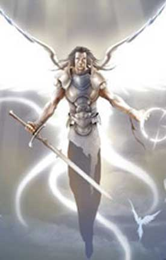

| Climate/Terrain | Any (Upper Planes) |
| Frequency | Very Rare (Uncommon) |
| Organization | Solitary (Solitary) |
| Activity Cycle | Any |
| Diet | Omnivore |
| Intelligence | Exceptionally Intelligent (16) 26 P. Combat. |
| Treasure | None |
| Alignment | Lawful Good |
| No. Appearing | 1 |
| Armor Class | 1 |
| Movement | 12 Fl. 18 (man. B) |
| Hit Dice | 9 + 3 |
| Thac0 | 12 |
| No. of Attacks | 2 al round con claymore (fattore iniziativa +6) |
| Damage / Attacks | 1d10+3 (taglio) |
| Special Attacks | Vedi sotto |
| Special Defenses | Vedi sotto |
| Magic Resistance | 40% |
| Size | Medium |
| Morale | Fanatic (17) |
| XP value | 5000 |
Descrizione
La Luce Angelica è una creatura planare che ha un ruolo di comando nelle schiere angeliche tanatiane. Le Luci Angeliche costituiscono gli ufficiali dei soldati della luce che combattono in nome dell'ordine e del bene e di Tanatos. Quando non sono incontrati soli, infatti, possono essere al comando di un gruppo di Angeli Minori Tanatiani. Costoro indossano una corazza di metallo bianco che copre solo alcune parti del loro corpo ed impugnano una claymore. Hanno uno splendido paio di ali bianche e luminose che gli permettono di volare.
Combat
Le Luci Angeliche combattono in corpo a corpo utilizzando la loro spada di grandi dimensioni (claymore) con la quale si possono ritenere abbiano raggiunto il grado di Maestro. Costoro, infatti, sono in grado di effettuare attacchi multipli non simultanei con tale arma potendo effettuare due attacchi al round. Ogni colpo dell'arma infligge 1d10+3 danni da taglio, inoltre ogni volta che una Luce Angelica colpisce con una di queste armi una creatura la cui esistenza si basa sul piano negativo (come i non morti) oppure una creatura demoniaca provocherà 1d3+3 danni da energia positiva supplementari per ogni colpo inferto. La claymore, inoltre, quando è impugnata da una Luce Angelica è considerabile un'arma magica +3 al fine di colpire creature con riduzione dei danni. Se utilizzata, quindi, contro creature colpibili solo da armi magiche con incantamento +4 o superiori questa sarà inefficace (gli attacchi provocheranno, però, i danni da energia positiva se dovuti).
Gli angeli minori
hanno i seguenti poteri speciali:
Riduzione dei Danni:
Le
Luci Angeliche sono totalmente immuni alle armi comuni per ferirle è necessario
disporre di magia o di armi magiche che siano almeno +1 (o di attacchi fisici ad esse equivalenti).
Deflettere i Colpi:
Le
Luci Angeliche si considerano possedere l'arte di combattimento "Deflettere i
Colpi" che possono utilizzare con la claymore con una possibilità di successo
pari ad 1-6 su 1d20 (link).
Irradiare Energia Positiva
(2/giorno):
Effettuando un'azione complessa che
richiede il mantenimento della concentrazione con un fattore iniziativa
pari a +4
le Luci Angeliche possono,
fino a due volte al giorno, infondere energia positiva intorno a loro. Quando
questo potere è attivato, in una
sfera di 9 metri di raggio
attorno all'angelo si infonde istantaneamente un notevole quantitativo di pura energia positiva. Alla fine del
round (come effetto istantaneo), tutte le
creature viventi che si trovano in quest'area (compreso l'angelo) ricevono
12 punti ferita di cure magiche,
le creature la cui esistenza si basa sul piano negativo (come i non morti) e le
creature demoniache ricevono, invece,
12 danni da energia positiva
(sempre qualora si trovino alla fine del round nell'area d'effetto).
Luce Sacra:
Concentrandosi per un intero round
le Luci Angeliche
possono attivare
questo potere. Alla fine del round di attivazione, qualora costoro non abbiano
perso la concentrazione, appare sulla loro persona una sfera di luce calda
ed estremamente luminosa. Questa
luce illumina come se fosse pieno giorno (continual light) in un raggio di 12
metri, spazzando via eventuali
tenebre magiche. La luce sovrasterà l'angelo seguendolo per un periodo di
10 rounds
al termine del quale si spegnerà. L'angelo, in ogni caso, può far terminare la
luce angelica con la sola volontà alla fine di ogni round di durata (free
action). La Luci Angelica
può utilizzare questo potere
un numero illimitato di volte al giorno
(se costei riattiva il potere prima del suo termine la durata della luce sarà
rinnovata per 10 rounds senza che calino nel frattempo le tenebre).
Habitat/Society
Le Luci
Angeliche
sono i comandanti delle truppe scelte delle armate celestiali, negli Upper Planes costoro girano
da sole oppure al comando di ronde composte da 3 a 5 angeli minori pattugliando le zone celesti ed i loro
confini.
Le Luci Angeliche, a volte, si recano da sole nel primo piano materiale a svolgere missioni
in favore del bene e della luce. Ciò avviene per ordine di entità angeliche
superiori o quando sono convocati da creature del primo piano materiale che
chiedano il loro aiuto.
Ecology
Le Luci Angeliche sono creature fiere e leali, estremamente devote alle potenze angeliche che servono ed al culto che rispettano.
Mystical Resource Sourge (Cuore) Quantità: 1, Presenza 75% - Effetto Particolare: Cura (Energia Positiva) - Qualità della Risorsa: Rare.